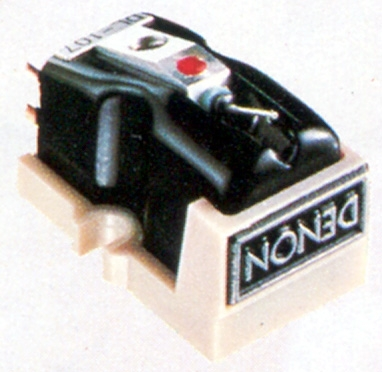
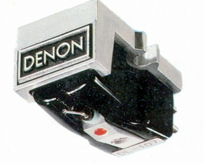
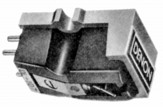
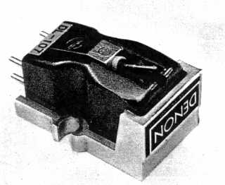
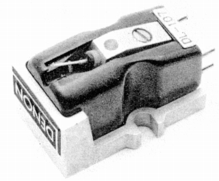
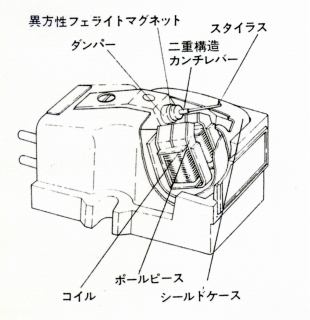
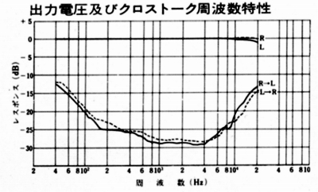

DL-107






■価格 13,800円
■発電方式 MM型
■出力電圧 2.5mV/1kHz
5cm/sec
■針圧 1.7〜2.3g（最適 2.0g）
■再生周波数帯域 20-20,000Hz±2dB
■チャンネルセパレーション
20dB以上/1kHz
■チャンネルバランス 1dB以内/1kHz
■コンプライアンス 8×10-6cm/dyne
■負荷抵抗 50kΩ
■直流抵抗
50kΩ
■インピーダンス 1.7kΩ/1kHz
■針先 0.65milソリッドダイヤ丸針
■自重 8.0g
■交換針 DSN-20
5,800円
■発売
1968年11月
■販売終了 1986年
■備考 垂直トラッキング角 17.5度
価格は1970年頃のもの
1975年頃は15,000円(DSN-20
7,200円)
基本的にDL-103に似た配置のMM型。
DL-103の十字型アーマチュアが円盤状マグネットに、
マグネットが6ポールヨークとコイルに置き換わった構造。
円盤状磁石は、通常のフェライトより保磁力が強い
異方性フェアライトマグネットを採用。

DENONのインデックスへ